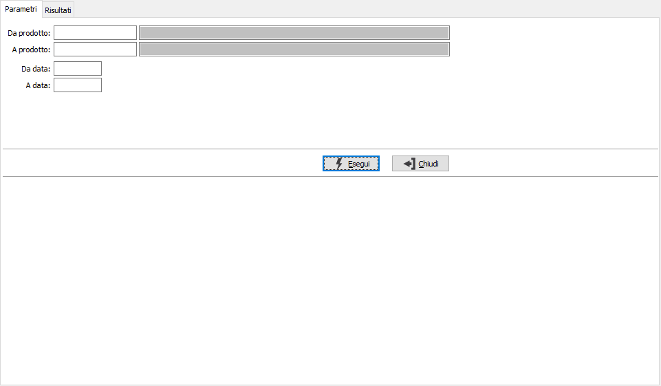
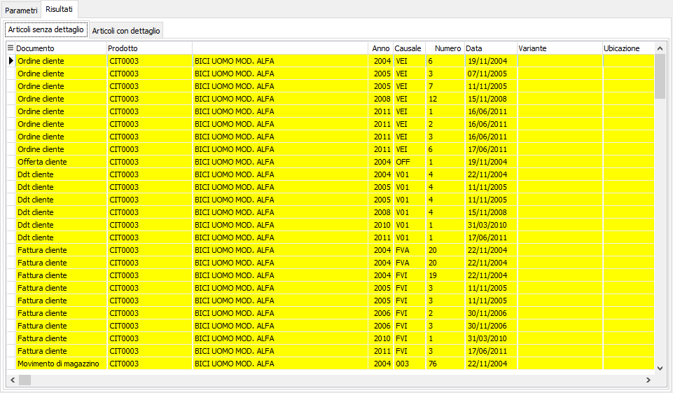
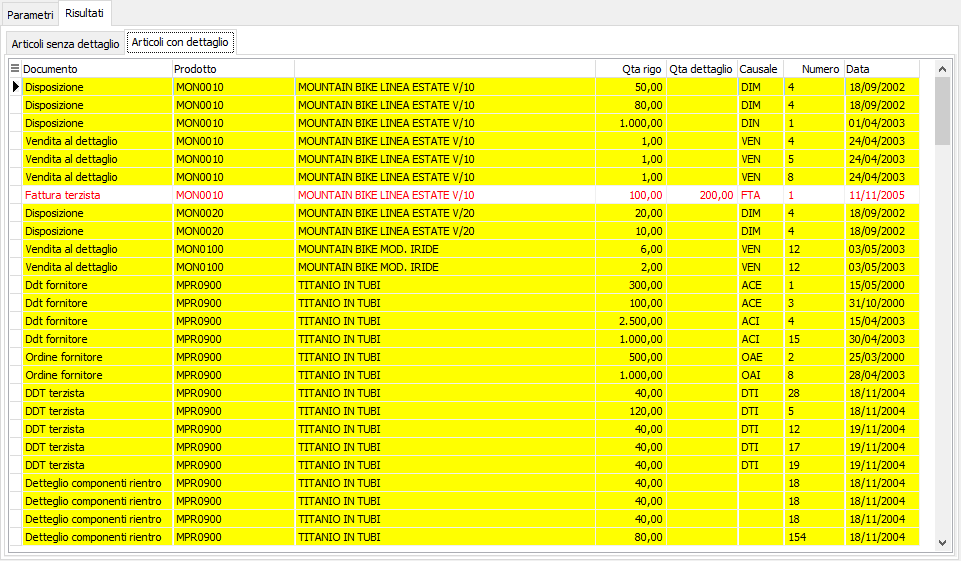

Controllo movimenti dettagli
Effettua un controllo di coerenza delle quantità tra i documenti ed i relativi dettagli, evidenziando le differenze con possibilità di stampare un report ed eventualmente eliminare i dettagli presenti per prodotti che non gestiscono più né lotti, né varianti, né ubicazioni oppure generare i dettagli quando mancanti su movimenti.

DA PRODOTTO: eventuale codice dell'articolo, presente in anagrafica Prodotti, da cui si desidera iniziare la selezione per il controllo dei movimenti. Confermando a vuoto, la selezione inizia con il primo prodotto valido. Sul campo è attiva la ricerca (F9) sull’anagrafica prodotti.
A PRODOTTO: eventuale codice dell'articolo, presente in anagrafica Prodotti, a cui si desidera terminare la selezione per il controllo dei movimenti. Confermando a vuoto, la selezione termina con l’ultimo valido. Sul campo è attiva la ricerca (F9) sull’anagrafica prodotti.
DA DATA: data documento da cui si vuole iniziare la selezione. Confermando a vuoto, la selezione inizia dalla prima data valida.
A DATA: data documento con cui si vuole concludere la selezione. Confermando a vuoto, la selezione termina con l'ultima data valida.
La pressione sul pulsante Esegui accede alla pagina dei risultati che è divisa, a sua volta, in due pagine: una pagina per i prodotti senza dettaglio per cui sono state trovate movimentazioni con dettaglio ed un'altra per i movimenti senza dettaglio relativi a prodotti con dettaglio.

In questa sezione i dati appaiono già selezionati con possibilità di intervento da parte dell'utente; è possibile produrre un report agendo sui bottoni Stampa ed Anteprima della toolbar oppure eliminare i dettagli selezionati premendo il bottone Salva oppure il tasto F10.

In questa sezione i dati appaiono già selezionati con possibilità di intervento da parte dell'utente; è possibile produrre un report agendo sui bottoni Stampa ed Anteprima della toolbar oppure, premendo il bottone Salva oppure il tasto F10, fare in modo che i movimenti che non hanno dettaglio vengano riallineati creando il dettaglio; i movimenti in cui il dettaglio esiste già ma non è coerente perchè parziale vengono evidenziati in rosso e non risultano selezionabili. Il dettaglio viene creato con la variante base (se l’articolo gestisce la variante) oppure con l’ubicazione base (se l’articolo gestisce l’ubicazione e il magazzino del rigo gestisce l’ubicazione) oppure con il lotto base (se l’articolo gestisce il lotto). Al termine dell’operazione di salvataggio vengono indicate le operazioni di servizio da eseguire (ricalcolo impegnato/ordinato, ricalcolo giacenze).